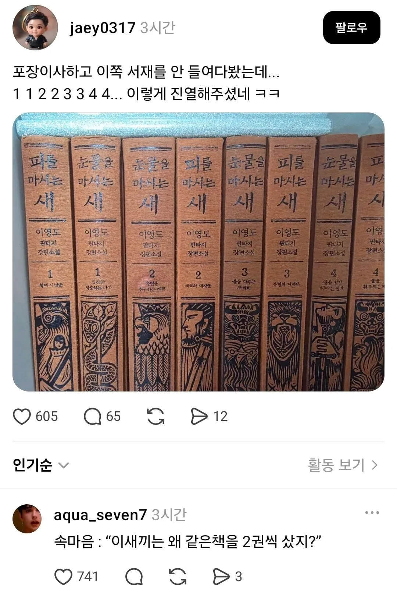

이 사람은 왜 같은 책을 두권씩 샀지?
댓글
한개는 보관용 한개는 보는용아닐까?
비슷한 디자인, 다른책
얘가 그 이사업체인가보군

ㅋㅋㅋㅋ두권이 다른책임
피를 마시는 새랑 눈물 마시는 새 다른거 두개네 ㅋㅋ
아 맞네 ㅋㅋㅋㅋㅋㅋ
제목이 다름
피를 마시는 , 눈물을 마시는
피마새 눈마새
피눈눈피눈피눈피
디자인 비용 아꼈나.
피를 마시는 새가 눈물을 마시는 새 뒷 이야기고연결된 세계관이라 양장본 만들 때 일부러 통일성 주어서 제작함.
같은 세겨관 라인의 책이라서...
양장본으로 나올때 저렇게 한거
겉표지는 색이다름
눈마새는 초록 피마새는 빨강
그거 벗겨놓은건데
피도마시고 눈물도 마신다
황금 피마새를 만드실 수 있겠군요
그와중에 앞권만 피눈인거 킹받네
눈마새가 이번에 프랑스에서 받은 상이
미래에 고전문학으로 읽힐 가치가 있는 장르문학?작품에 주는 상이라던데
한 1-200년 지나면 몽테크리스토 삼총사 로빈슨크루소 이런 책이랑 동급의 반열에 오르는건가
저거 잼씀?
당장 읽어
듄 1 권 보다가 지쳐서 하차할까 싶은데... 갈아타야하나
웹소설 절여져있으면 이거도 초반은 읽기 힘듦
웹소설은 안봄. 판타지는 묵향이 마지막.
이거 그럼 작품성도 있는거야? 다큰 어른이 카페에 앉아서 늑대의유혹 읽고 앉았네 같은 소리는 듣고싶지 않아,,,
국내 판타지에서 작품성은 원탑이지 그래도 나름 판타지라는 장르를 넘었다 생각함
오그럼 나도 구매한다 말리지마라
오디오북도 존나 잘만들었음
니 뇌 내가살께
눈마새는 꼭 읽어볼만한 책이지
눈마새만큼은 추천
쿠팡에서 1권 주문할꼐 ㄱㄷ.
따로파냐? 4권세트일껀데
1권씩 팔고있음 1.8 정도하네
오 요새는 따로파나보네
좀 어려울순있는데 재미있음
1권보고 괜찮으면 크래프톤에서
나온 아트북도 보면 좋음
처음에는 아래 그림이 다르길래 아 그림버전이 달라서 2개 샀나보다 했는데 바로 위에 소제목이 달라서 뭐지? 다시 보니 제목도 다름 ㅋㅋㅋ
피눈물을 마시는 새
피눈눈피눈피눈피 ㅋㅋㅋㅋㅋ
뭔가했더니ㄷㄷㄷ
피눈물을 마시는 새